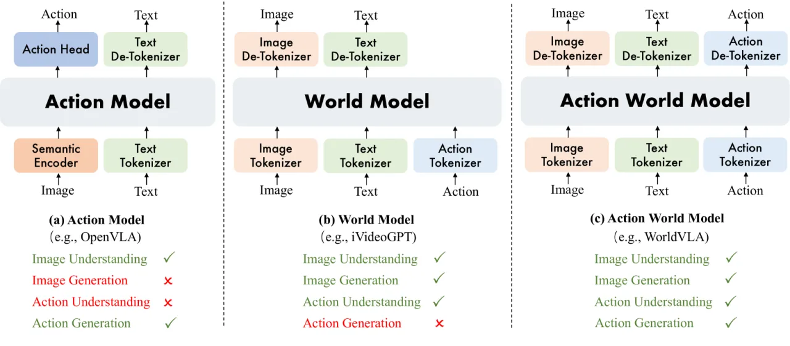
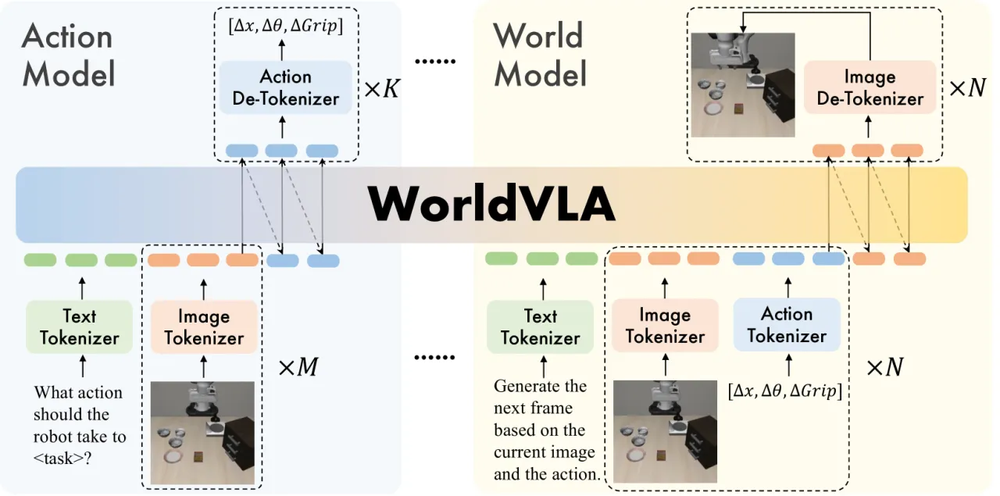
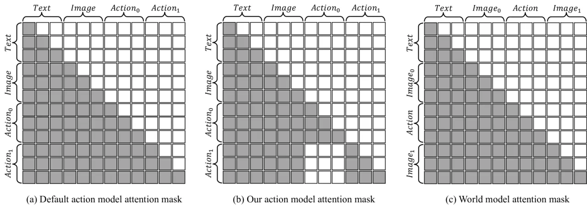
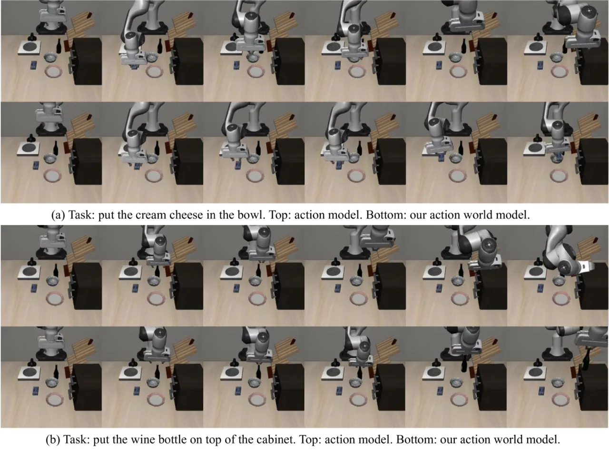
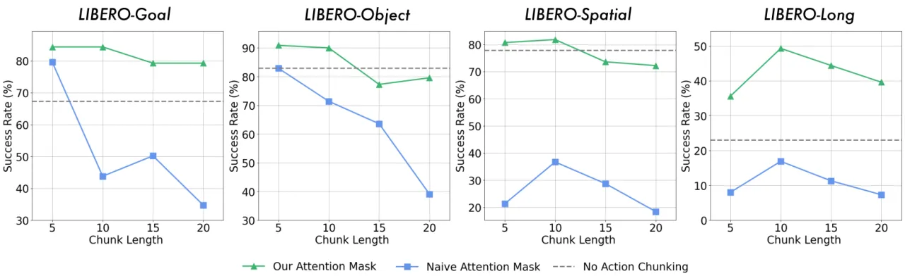

WorldVLA 将视觉-语言-动作模型（VLA）与世界模型集成在同一自回归架构中，实现动作预测与未来帧预测的相互增强。针对动作块（action chunk）自回归生成时的误差累积问题，论文提出一种选择性 attention mask 策略，在 LIBERO 基准上将平均成功率（SR）提升至 81.8%，相比 OpenVLA 基线（76.5%）提升显著。
当前机器人学习中，动作模型（VLA）与世界模型被视为两个相互独立的范式：VLA 从图像和文本预测动作，世界模型从图像和动作预测未来帧。这两者的能力存在天然互补性，但此前没有工作将它们真正统一在同一框架中并验证相互增益。
"We integrate action model and world model into a unified framework, demonstrate that action and image generation mutually enhance each other, and propose an attention mask strategy that selectively masks prior actions during the generation of the current action."

在自回归生成多步动作块（action chunk）时，每一步动作都依赖前一步的输出。若前一步出现误差，后续动作会受到污染，导致整体性能显著下降。实验表明，在不加干预的情况下加入 action chunking 会导致成功率下降 10–50 个百分点。
WorldVLA 基于 Chameleon 架构构建，将图像、文本、动作三类 token 统一在单一序列中进行自回归建模。动作模型负责从视觉和语言条件预测动作序列，世界模型在此基础上额外预测下一帧图像，两者共享参数，以多任务方式联合训练。

论文针对 action chunk 自回归生成中的误差累积问题，提出选择性 attention mask：在生成当前动作 token 时，遮盖（mask）同一 chunk 中此前已生成的动作 token，使每个动作仅依赖视觉和文本输入，而非依赖前序动作。

论文从两个维度验证互利关系：（1）加入世界模型预测任务后，动作模型的抓取成功率提升 4%，说明预测未来视觉状态有助于学习更优的动作策略；（2）世界模型以动作为条件（action world model）相比无动作条件的纯世界模型，在 LIBERO 数据集上 FVD 降低约 10%（50 帧评估），说明动作信息改善了未来帧预测质量。
主要在 LIBERO 基准上评估，涵盖 Spatial、Object、Goal、Long 四个子任务，指标为成功率（SR）。同时在 LIBERO 上评估世界模型质量（FVD、LPIPS）。
| Model | Spatial SR | Object SR | Goal SR | Long SR | Average SR |
|---|---|---|---|---|---|
| OpenVLA（基线） | 84.7% | 88.4% | 79.2% | 53.7% | 76.5% |
| WorldVLA 256×256 | 85.6% | 89.0% | 82.6% | 59.0% | 79.1% |
| WorldVLA 512×512 | 87.6% | 96.2% | 83.4% | 60.0% | 81.8% |
| Model | FVD↓（10 帧） | FVD↓（50 帧） | LPIPS↓（10 帧） | LPIPS↓（50 帧） |
|---|---|---|---|---|
| 纯世界模型（World Model only） | 250.0 | 718.6 | 11.97 | 15.60 |
| 动作世界模型（Action World Model） | 255.1 | 674.1 | 11.94 | 15.44 |

Table 3 分析了各组件对动作模型性能的影响：
| 配置 | Goal SR | Object SR | Spatial SR | Long SR | Average SR |
|---|---|---|---|---|---|
| 仅动作（Action only） | 67.3% | 82.9% | 77.8% | 23.0% | 62.8% |
| +世界模型（+World model） | 73.1% | 88.0% | 80.2% | 27.3% | 67.2% |
| +Action chunking（无 mask） | 79.6% | 82.9% | 36.7% | 16.9% | 54.0% |
| +Action chunking + attention mask | 84.4% | 90.9% | 81.8% | 49.3% | 76.6% |
| 完整模型（Full model） | 85.1% | 90.9% | 84.0% | 52.4% | 78.1% |
关键发现：仅加入 action chunking（不加 mask）会导致平均 SR 从 67.2% 骤降至 54.0%（尤其 Spatial SR 从 80.2% 跌至 36.7%）；加入 attention mask 后恢复至 76.6%，再结合世界模型提升至 78.1%。

在启用 action chunking 的条件下：1 帧输入 SR 为 74.0%；2 帧输入 SR 为 84.4%；4 帧输入 SR 为 84.7%。选用 2 帧作为默认配置，在性能与计算效率之间取得最优平衡。
论文指出 "scaling of both data and model size emerges as a promising avenue"，当前实验规模有限，更大规模训练的潜力尚待验证。
当前使用的离散图像 tokenizer "exhibits limitations in perceptual expressiveness"，作者建议未来开发 "a unified tokenizer capable of both understanding and generating high-quality visual content"。
论文认为引入 "an auxiliary action head" 有助于进一步增强抓取能力，但当前版本尚未实现。
所有定量实验均在 LIBERO 仿真基准上进行，未在真实机器人硬件上验证泛化性能。（inferred from scope）